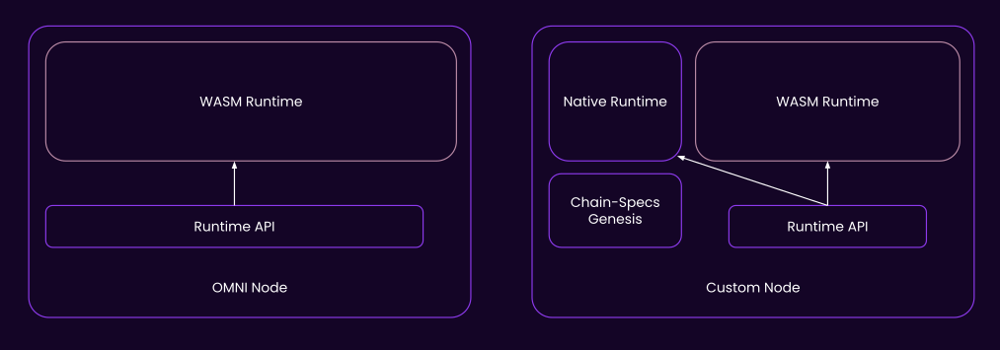
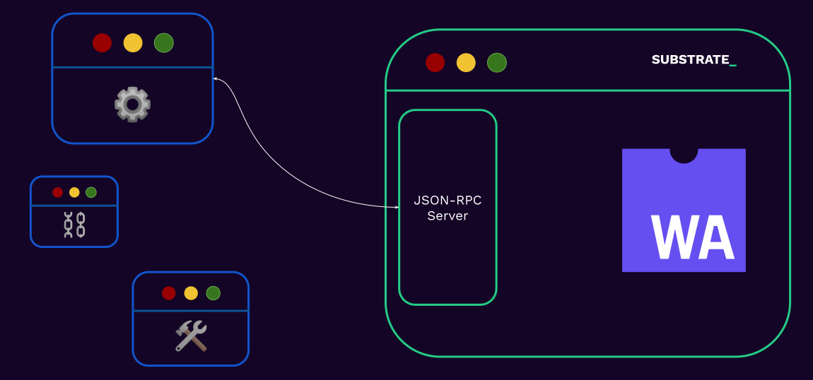

<!DOCTYPE html>
<html lang="en">

<head>
  <meta charset="utf-8" />
  <meta name="viewport" content="width=device-width, initial-scale=1.0, maximum-scale=1.0, user-scalable=no" />

  <title>Interacting With a Substrate Blockchain</title>
  <link rel="icon" href="./../../assets/favicon.svg" />
  <link rel="shortcut icon" href="./../../assets/favicon.png" />
  <link rel="stylesheet" href="./../../dist/reset.css" />
  <link rel="stylesheet" href="./../../dist/reveal.css" />
  <link rel="stylesheet" href="./../.././assets/styles/PBA-theme.css" id="theme" />
  <link rel="stylesheet" href="./../../css/highlight/shades-of-purple.css" />

  <link rel="stylesheet" href="./../.././assets/styles/custom-classes.css" />

</head>

<body class="site">
  <footer style="position: fixed; top: 1.5%; left: 2%; z-index: 99;">
    <a href="./../../index.html">
      
    </a>
  </footer>
  <main class="reveal">
    <article class="slides">
      <section  data-markdown><script type="text/template">

<!-- .slide: data-background-image="../../assets/img/0-Shared/bg/PBA_Background.png" data-background-size="cover" -->

# Interacting With a Substrate Blockchain
</script></section><section  data-markdown><script type="text/template">
## Before We Start

Run the following commands, if you have not done already:

```
cargo install staging-chain-spec-builder
cargo install polkadot-omni-node
# in your polkadot-sdk clone
cargo build --release -p minimal-template-runtime
```
</script></section><section ><section data-markdown><script type="text/template">
## Substrate Node's Little Secret



</script></section><section data-markdown><script type="text/template">
## Nodes With Hardcoded Runtime

```
# valid, runs the polkadot chain-spec
polkadot --chain polkadot --tmp
# runs the kusama chain-spec
polkadot --chain kusama --tmp
```
</script></section><section data-markdown><script type="text/template">
## Omni-Nodes

```
# Any chain-spec file generated with chain-spec-builder
polkadot-omni-node --chain spec.json --tmp
```
</script></section></section><section  data-markdown><script type="text/template">
## Chain Specification Files

* JSON File containing initial specification of the chain:
  * What is in the genesis state?
  * What is the native token of the chain?
  * Genesis block hash
  * Bootnodes
  * And more!
</script></section><section  data-markdown><script type="text/template">
## Genesis WASM File

* Initial WASM file must be in the chain-spec as well!

```
chain-spec-builder create --runtime ./minimal_template_runtime.wasm
```
</script></section><section  data-markdown><script type="text/template">
## Genesis State

* The WASM file and chain-spec-builder have a protocol to communicate _WHAT_ the genesis state should be.

```
chain-spec-builder create --runtime ./minimal_template_runtime.wasm default
                                                                    ^^^^^^^
```
</script></section><section  data-markdown><script type="text/template">
## JSON RPC


</script></section><section  data-markdown><script type="text/template">
## JSON RPC

* The interface available to you once you run any substrate-based chain.
  * `wscat`, `curl` etc.
  * client libraries, like `polkadot-js`, `papi`, `subxt`
  * UIs like `polkadot-js-apps`, `papi-console`
  * Any much more, that is ultimately built on top of JSON RPC
* (needless to say you may also connect to a public RPC server, not just your local one)
</script></section><section  data-markdown><script type="text/template">
## JSON-RPC

The RPC methods that a substrate node exposes are scoped and has the pattern `"<scope>_<method>"`.

```sh
 wscat \
  -c ws://localhost:9944 \
  -x '{"jsonrpc":"2.0", "id": 42, "method":"rpc_methods" }' \
  | jq
```
</script></section><section  data-markdown><script type="text/template">
## JSON-RPC: Scopes

- &shy;<!-- .element: class="fragment" --> `author`: for submitting extrinsic to the chain.
- &shy;<!-- .element: class="fragment" --> `chain`: for retrieving information about the _blockchain_ data.
- &shy;<!-- .element: class="fragment" --> `state`: for retrieving information about the _state_ data.
- &shy;<!-- .element: class="fragment" --> `system`: information about the chain.
- &shy;<!-- .element: class="fragment" --> `rpc`: information about the RPC endpoints.

<aside class="notes"><p>recall:</p>
<p><a href="https://docs.rs/sc-rpc-api/latest/sc_rpc_api/">https://docs.rs/sc-rpc-api/latest/sc_rpc_api/</a></p>
<ul>
<li>The full list can also be seen here: <a href="https://polkadot.js.org/docs/substrate/rpc/">https://polkadot.js.org/docs/substrate/rpc/</a></li>
<li>Specs: <a href="https://paritytech.github.io/json-rpc-interface-spec/introduction.html">https://paritytech.github.io/json-rpc-interface-spec/introduction.html</a></li>
<li>Upcoming changes to JSON-RPC api: <a href="https://forum.polkadot.network/t/new-json-rpc-api-mega-q-a/3048">https://forum.polkadot.network/t/new-json-rpc-api-mega-q-a/3048</a></li>
</ul>
</aside></script></section><section  data-markdown><script type="text/template">
</script></section><section  data-markdown><script type="text/template">
## QUICK PAPI Demo

</script></section><section  data-markdown><script type="text/template">
## Your Workshop

https://hackmd.io/@kizi/B1UU4HI2Wx

</script></section><section  data-markdown><script type="text/template">
## Additional Resources! 😋

> Check speaker notes (click "s" 😉)

<aside class="notes"><ul>
<li>see &quot;Client Libraries&quot; here: <a href="https://project-awesome.org/substrate-developer-hub/awesome-substrate">https://project-awesome.org/substrate-developer-hub/awesome-substrate</a></li>
<li><a href="https://paritytech.github.io/json-rpc-interface-spec/introduction.html">https://paritytech.github.io/json-rpc-interface-spec/introduction.html</a></li>
<li>Full subxt guide: <a href="https://docs.rs/subxt/latest/subxt/book/index.html">https://docs.rs/subxt/latest/subxt/book/index.html</a></li>
<li><a href="https://github.com/JFJun/go-substrate-rpc-client">https://github.com/JFJun/go-substrate-rpc-client</a></li>
<li><a href="https://github.com/polkascan/py-substrate-interface">https://github.com/polkascan/py-substrate-interface</a></li>
<li><a href="https://github.com/polkadot-api/polkadot-api">https://github.com/polkadot-api/polkadot-api</a></li>
<li>more here: <a href="https://project-awesome.org/substrate-developer-hub/awesome-substrate">https://project-awesome.org/substrate-developer-hub/awesome-substrate</a></li>
<li>Listen to James Wilson introducing subxt: <a href="https://www.youtube.com/watch?v=aFk6We_Ke1I">https://www.youtube.com/watch?v=aFk6We_Ke1I</a></li>
</ul>
</aside></script></section>
    </article>
  </main>

  <script src="./../../dist/reveal.js"></script>

  <script src="./../../plugin/markdown/markdown.js"></script>
  <script src="./../../plugin/highlight/highlight.js"></script>
  <script src="./../../plugin/zoom/zoom.js"></script>
  <script src="./../../plugin/notes/notes.js"></script>
  <script src="./../../plugin/math/math.js"></script>

  <script src="./../../assets/plugin/mermaid.js"></script>
  <script src="./../../assets/plugin/mermaid-theme.js"></script>

  <script src="./../../assets/plugin/chart/chart.js"></script>
  <script src="./../../assets/plugin/chart/chart.min.js"></script>

  <script src="./../../assets/plugin/tailwindcss.min.js"></script>

  <script>
    function extend() {
      var target = {};
      for (var i = 0; i < arguments.length; i++) {
        var source = arguments[i];
        for (var key in source) {
          if (source.hasOwnProperty(key)) {
            target[key] = source[key];
          }
        }
      }
      return target;
    }

    // default options to init reveal.js
    var defaultOptions = {
      controls: true,
      progress: true,
      history: true,
      center: true,
      transition: 'default', // none/fade/slide/convex/concave/zoom
      slideNumber: true,
      mermaid: {
        startOnLoad: false,
        logLevel: 3,
        theme: 'base',
        themeVariables: {
          primaryColor: purple,
          primaryTextColor: white,
          primaryBorderColor: pink,
          lineColor: pink,
          secondaryColor: lightPurple,
          tertiaryColor: lightPurple,
        },
      },
      chart: {
        defaults: {
          color: 'lightgray', // color of labels
          scale: {
            beginAtZero: true,
            ticks: { stepSize: 1 },
            grid: { color: "lightgray" }, // color of grid lines
          },
        },
        line: { borderColor: ["#ccc", "#FFFFFF", "#888888"], "borderDash": [[5, 10], [0, 0]] },
        bar: { backgroundColor: ["#ccc", "#FFFFFF", "#888888"] },
      },
      plugins: [
        RevealMarkdown,
        RevealHighlight,
        RevealZoom,
        RevealNotes,
        RevealMath,
        RevealMermaid,
        RevealChart
      ]
    };

    // options from URL query string
    var queryOptions = Reveal().getQueryHash() || {};

    var options = extend(defaultOptions, {"width":1400,"height":900,"margin":0,"minScale":0.2,"maxScale":2,"transition":"none","controls":true,"progress":true,"center":true,"slideNumber":true,"backgroundTransition":"fade"}, queryOptions);
  </script>


  <script>
    Reveal.initialize(options);
  </script>
</body>

</html>
